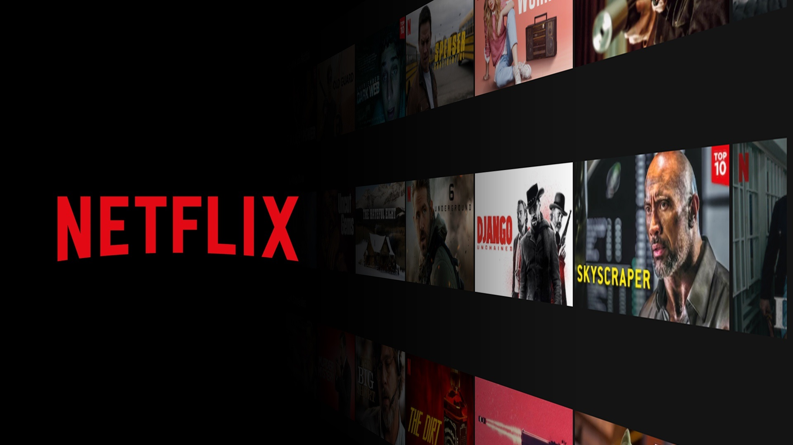
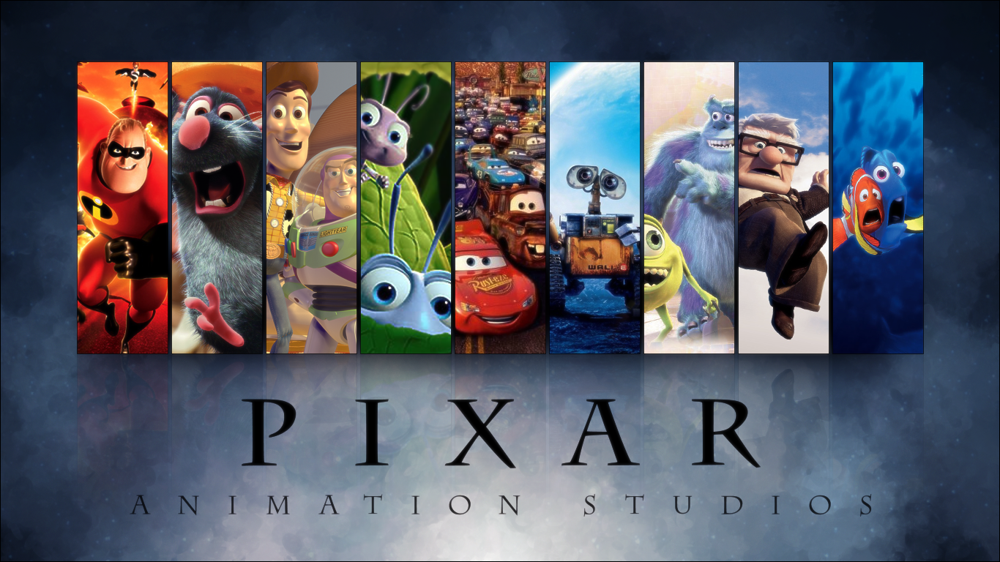
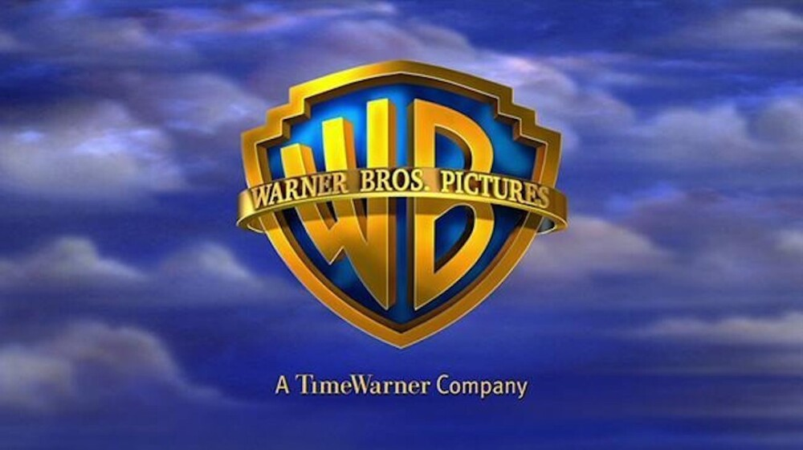

NETFLIX
Как появился Нетфликс?

A Нетфликс появился 29 августа 1997 года, созданная предпринимателями Марк Рэндольф e Рид Гастингс и имел свою первую штаб-квартиру в г. Scotts Valley, Калифорния (позднее переехала в Los Gatosв округе Санта-Клара). Первоначально компания выполняла прокат DVD через заказы с доставкой и возвратом через почтовое отделение — с заказами, размещенными на Netflix и на его веб-сайте Netflix.com — инновация того времени, которая стала зародышем всего будущего потенциала бренда.
О создателях Нетфликс, Марк Рэндольф имел академическое образование в области геологии и большой опыт в области маркетинга, Рид Гастингс Он имел степень по математике и специализацию в области искусственного интеллекта. Оба уже работали в своих областях и имели общий интерес к компаниям и бизнес-моделям, работающим в онлайн-мире, таким как Amazon о Google.
Рост подписки и обслуживание
В конце 90-х, точнее в 1999, чтобы Netflix развил свою систему и создал абонентское обслуживание портала, который предложил своим клиентам возможность арендовать DVD в неограниченное количество e нет даты возвращения. Прощайте, ежемесячные лимиты и штрафы за просрочку платежа — некоторые из основных задач, с которыми платформа должна бороться. НАШИ абонентское обслуживание также предложил бесплатную пробную версию, «бесплатная пробная версия“, который был предоставлен путем приглашения друга через код на платформу.
Em 2000, Netflix реализовал система рекомендаций по титулам основанный на профилях пользователей, один из самых больших триумфов платформы. Алгоритм рекомендации облигаций, называемый Синематч в то время он был сделан из базы данных, которую система архивирует, на основе продукции, уже просмотренной и оцененной ее пользователями. Еще в 2000 г. Рид Гастингс попытка партнерства с арендным гигантом Блокбастер, которая отказалась и, как известно, потеряла бы в будущем прекрасную возможность продолжать свое существование.
Примерно в это же время, точнее в 2005, что Netflix внедрил — по мере роста числа пользователей — систему профили, чтобы каждый член семьи мог получить доступ к своим любимым фильмам и сериалам, используя единую учетную запись. сквозь профили, можно сохранить списки отдельных любимых книг для каждого члена семьи, аналогично использованию настраиваемого рабочего стола на ПК.
Расширение и оригинальные творения
Вскоре весь этот достигнутый успех достиг других мест за пределами США, и так оно и случилось, когда Netflix расширил свои горизонты до Канада em 2010 — год, когда на платформе был создан раздел, посвященный детским изданиям — , Латинская Америка и Карибский бассейн em 2011, Ирландия, Соединенное Королевство e Скандинавские страны нет ано де 2012 - прибытие на отметку 25 миллионов подписей -, и Австрия, Бельгия, Франция, Германия, Люксембург e Швейцария в 2014 году, превысив 50 миллионов подписчиков. Это было только начало «мирового господства Netflix», при котором телевизоры уже могли получить доступ к платформе с помощью единственной кнопки, существовавшей (в 2011 году) в самых современных пультах дистанционного управления!
Именно тогда, учитывая растущий успех и ожидание полета еще выше, чем Netflix начал инвестировать в производство наименований, изначально сделанных собственными силами, имея в качестве своего первого производства Стоячий Билл Бёрр: Вы все одинаковые", открытый в 2012. Это тоже был год оригинальная первая серия дебютной платформы, Лиллехаммер, 6 февраля, хотя и не считалась полностью оригинальной серией для платформы (см. ниже в разделе Оригинальные названия Netflix).
PIXAR
Студия Pixar

Студия Pixar подарила нам «Историю Игрушек», «Тачки», «Рататуй», «Корпорацию Монстров», «В поисках Немо» и много других захватывающих мультфильмов. Почти каждый из них вызывает у нас ностальгию.
Последний проект студии — анимационная полнометражка «Душа» — тоже стал прорывом. Он собрал в прокате $135 миллионов и уже взял несколько наград, включая «Золотой Глобус» за лучший мультфильм.
Рассказываем, как развивалась компания с момента основания и всегда ли она была такой успешной.
Начало пути
История студии Pixar началась в 1979 году, когда создатель «Звездных Войн» Джордж Лукас открыл новое подразделение своей кинокомпании Lucasfilm — The Graphics Group. Главой отдела стал Эд Кэтмелл из Технологического института Нью-Йорка. Тогда в студии разрабатывали диджитал-системы для обработки картинки и звука
Самостоятельной студией The Graphics Group стала только в 1986 году, когда ее выкупил Стив Джобс. Он же переименовал ее в Pixar. Компания начала выпускать программы для компьютерной графики, делать рекламные ролики и короткометражки.
Первые проекты
Первым значимым проектом Pixar стал эпизод «Эффект генезиса» для Star Trek II: The Wrath of Khan. Сцену, где изначально безжизненная планета быстро зарастает флорой, полностью отрисовали на компьютере. Тогда, в 1982 году, такое решение для художественного фильма применили впервые.
Впоследствии Pixar еще не раз становилась первооткрывателем решений в компьютерной графике. Так, «История Игрушек», выпущенная в 1995 году, стала первым в мире полнометражным компьютерным анимационным фильмом.
Кстати, именно этот проект оказался переломным в истории компании, потому что после его выпуска Pixar перестала делать рекламу. До этого студия сотрудничала с брендами Tropicana, Listerine and Lifesavers.
Технические секреты студии
Pixar — это та компания, которая делает не только душевные, но и технически идеальные проекты. О невероятной детализации мультфильмов хотят не только легенды, но и мемы.
Ничего удивительного, если вспомнить, что изначально Pixar развивала программные системы анимации. Один из самых известных продуктов — движок Renderman. Его используют для создания визуальных эффектов в фильмах. Например, во «Властелине Колец», «Матрице» и «Алладине».
Первый релиз движка был выпущен в 1993 году. Последний Pixar опубликовал в ноябре 2020 года. Кстати, Renderman — это первое ПО, за которое разработчикам дали «Оскар» в 2001 году, после выпуска «Истории Игрушек-2».
Фильмография
Фильмы, созданные студией Pixar Animation Studios, восхищают зрителей всего мира своей неповторимой атмосферой и глубоким смыслом. Среди самых популярных работ Pixar можно выделить такие шедевры, как "История игрушек", "В поисках Немо" и "Вверх". Эти фильмы не только завоевали миллионы сердец своими захватывающими сюжетами и великолепной анимацией, но и стали символом детства и вечной мудрости для многих поколений.
Кроме упомянутых, Pixar порадовала зрителей множеством других захватывающих фильмов. "ВАЛЛ·И" привлекает своей трогательной историей любви между роботами в бурлящем мире, лишенном жизни. "Храбрая сердцем" впечатляет сказочной атмосферой и смелым поворотом к сказкам и легендам. "Тайна Коко" окутывает нас магией и мистикой, рассказывая о семейных ценностях и важности памяти. "Вспомни прошлое" поднимает тему времени и взросления, даруя нам уроки о принятии своей судьбы и любви к семье. Наконец, "Живая сталь" – это захватывающее путешествие в мир бокса и отношений между отцом и сыном, ожившее благодаря таланту Pixar.
WARNER BROS.
Начало пути

Существующая до сих пор кинокомпания Warner Brothers основана в 1905 году , а официально зарегистрирована в 1923-м. Ее создателями были четверо братьев Вонсаль: Хирш Мойжеш (Гарри Уорнер, 1881–1958), Арон (Альберт Уорнер, 1884–1967), Шмуль (Сэм Уорнер, 1888–1927) и Исаак (Джек Уорнер, 1892–1978).
Первый фильм
Вместе с проектором им досталась копия фильма «Большое ограбление поезда» (The Great Train Robbery , 1903) Эдвина Портрера. Первым кинотеатром стала взятая напрокат старая палатка, установленная на заднем дворе дома Уорнеров. На сеансы приходило все больше людей — к неудовольствию соседей, которым мешали толпы и шум. Когда соседи начали вызывать полицию, братья решили перенести свой бизнес в городок Найлc неподалеку. Сейчас именно он считается местом рождения Warner Brothers.
Успехи компании
Новое дело оказалось настолько прибыльным , что братья решили открыть еще одну дистрибьюторскую фирму, в Норфолке в Вирджинии. Она получила название The Duquesne Film Exchange. Гарри и Ал остались в Питтсбурге, а Сэм и Джек переехали в Норфолк, где первым делом начали издавать тоненькую газетку под названием — как оригинально! — The Duquesne Film Noise, то есть «Отзвуки кино из Дюкейн». За короткое время Уорнерам удалось заключить договоры более чем с двумя сотнями продюсеров на эксклюзивный прокат их фильмов в кинотеатрах.
Следующие два-три года братьям не слишком везло. Фильмы , которые они делали, приносили убытки.
Настоящий успех
Из отчаянного положения братьев Уорнеров спас еще один польский эмигрант , Марк Динтенфасс, который вместе с Генри Гарликом профинансировал новый фильм братьев — «Мои четыре года в Германии» (My Four Years in Germany, 1918). Сценарий фильма был основан на дневниках бывшего американского посла в Германии и его безуспешных попытках предотвратить мировую войну. Картина, бюджет которой составлял 50 тысяч долларов, вскорости принесла доход в полтора миллиона. Это был первый настоящий успех братьев Уорнеров
Благодаря опыту работы с радио братья раньше других оценили потенциал звукового кино. В 1927 году они первыми в мире выпустили фильм с синхронными диалогами — «Певец джаза» (Jazz Singer , 1927). За день до премьеры, 5 октября, в Нью-Йорке умер Сэм. Поскольку еврейская религиозная традиция требует, чтобы умершего хоронили как можно скорее, никто из членов семьи не смог участвовать в премьерном показе. Когда присуждались первые «Оскары» в 1929 году, «Певец джаза» был исключен из общего конкурса — правление Академии решило, что его участие было бы несправедливым по отношению к немым фильмам. Впрочем, он получил специального «Оскара» за техническое новаторство, то есть за использование звука.
Дела крупнешей компании сейчас
Warner Bros является одной из крупнейших кинематографических студий в мире, известной своими фильмами, телевизионными программами, анимацией и играми. Компания также имеет значительное влияние на индустрию развлечений через свои франшизы и интеллектуальную собственность, такие как фильмы о супергероях DC Comics, "Гарри Поттер" и другие.